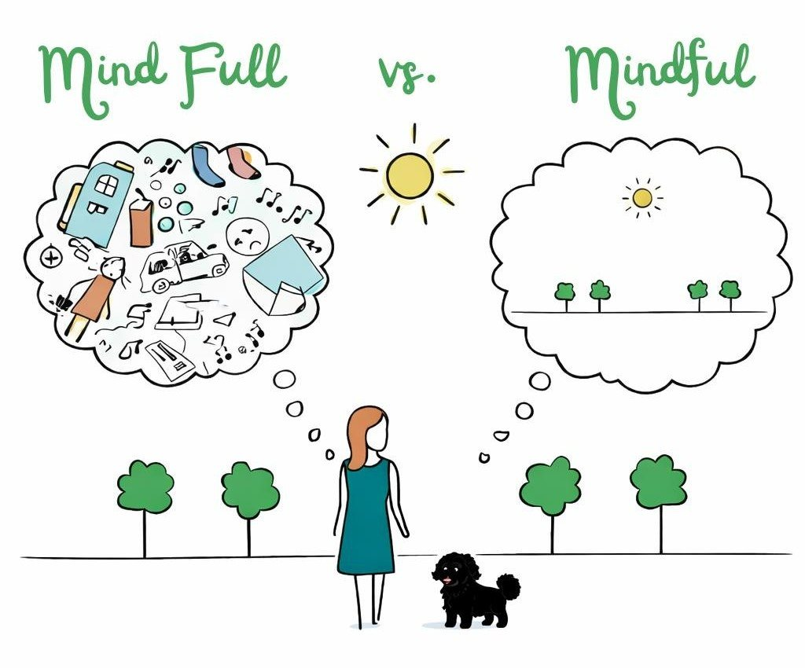

Achtsamkeit
im Sinne einer wachen, urteilsfreien Gegenwärtigkeit. Sie ist Ausdruck innerer Bereitschaft, dem anderen wirklich zu begegnen, nicht als Objekt, sondern als von Gott geliebtes Gegenüber wertzuschätzen.
Tharsei
Laut frühhochdeutschem Wörterbuch bedeutet Achtbarkeit „Ansehen, Würde, Wertschätzung, insbesondere von Personen hohen Standes". Im Neudeutschen wird es nicht mehr verwendet. Für mich impliziert dieses Wort drei Haltungen, die in meiner Arbeit eine zentrale Rolle spielen:
im Sinne einer wachen, urteilsfreien Gegenwärtigkeit. Sie ist Ausdruck innerer Bereitschaft, dem anderen wirklich zu begegnen, nicht als Objekt, sondern als von Gott geliebtes Gegenüber wertzuschätzen.
als Haltung, die den anderen als Gabe erkennt, unabhängig von seiner Funktion, seiner Geschichte oder seinen Symptomen. Diese Dankbarkeit nährt sich aus dem christlichen Menschenbild, das in jedem Menschen ein Ebenbild Gottes sieht, auch, oder gerade dann, wenn sein Leben von Brüchen, Schuld oder Schmerz gezeichnet ist.
Das Anerkennen Gottes und die Bereitschaft, sich selbst in seinem Licht zu sehen, ist ein Zeichen der Demut. Demütige Menschen erkennen ihre Abhängigkeit von Gott und verstehen ihre Talente als Geschenk: als etwas, das ihnen anvertraut wurde.
Das besondere Angebot
Beratung in Bewegung an der frischen Luft. Der Blick geht in die weite Landschaft statt aufs Gegenüber, Gedanken und Gefühle kommen ins Fließen, und Kurt wirkt dabei wie ein Eisbrecher, der ganz ohne Worte Nähe schenkt.
Ein paar Zeilen genügen, unverbindlich und in Ruhe. Ich melde mich herzlich bei Ihnen zurück.
Über mich
Mein Name ist Esther Sluiter. Als staatlich anerkannte Sozialarbeiterin und ‑pädagogin (Bachelor und Master of Arts „Soziale Arbeit und Gesundheit") sowie erfahrene Suchttherapeutin begleite ich Menschen in Emden auf ihrem Weg: in Krisen, an Wendepunkten und überall dort, wo das Leben schwer wiegt.
In meiner beraterischen Arbeit arbeite ich nach der psychoanalytisch‑interaktionellen Methode. Ziel ist es, verborgene Konflikte, Übertragungen und Gegenübertragungen bewusst zu machen, damit aus alten Mustern neue Handlungsmöglichkeiten wachsen können.
Tharsei (griechisch θάρσει) bedeutet „Sei guten Mutes" oder „Fasse Mut". Es sind Worte des Zuspruchs, die Jesus im Neuen Testament Menschen mitten in ihrer Not schenkt: nicht als Vertröstung, sondern als tragfähige Ermutigung. Genau diese Hoffnung prägt meine Arbeit: Menschen in schwierigen Lebenssituationen zu begleiten, ihnen Zuversicht zu vermitteln und sie zu ermutigen, wieder guten Mutes nach vorne zu blicken.
Laut frühhochdeutschem Wörterbuch bedeutet Achtbarkeit „Ansehen, Würde, Wertschätzung, insbesondere von Personen hohen Standes". Im Neudeutschen wird es nicht mehr verwendet. Für mich impliziert dieses Wort drei Haltungen, die in meiner Arbeit eine zentrale Rolle spielen:
im Sinne einer wachen, urteilsfreien Gegenwärtigkeit. Sie ist Ausdruck innerer Bereitschaft, dem anderen wirklich zu begegnen, nicht als Objekt, sondern als von Gott geliebtes Gegenüber wertzuschätzen.
als Haltung, die den anderen als Gabe erkennt, unabhängig von seiner Funktion, seiner Geschichte oder seinen Symptomen. Diese Dankbarkeit nährt sich aus dem christlichen Menschenbild, das in jedem Menschen ein Ebenbild Gottes sieht, auch, oder gerade dann, wenn sein Leben von Brüchen, Schuld oder Schmerz gezeichnet ist.
Das Anerkennen Gottes und die Bereitschaft, sich selbst in seinem Licht zu sehen, ist ein Zeichen der Demut. Demütige Menschen erkennen ihre Abhängigkeit von Gott und verstehen ihre Talente als Geschenk: als etwas, das ihnen anvertraut wurde.
„Jeder Mensch ist ein beschenktes Geschenk."
Angebote & Ablauf
Sucht kommt nicht von Drogen, sondern von betäubten Träumen, verdrängten Sehnsüchten, verschluckten Tränen und erfrorenen Gefühlen.
Bilstein & Voigt-Rubio
Selten beginnt sie mit einer Entscheidung, oft fast unbemerkt. Umso wichtiger ist es, früh hinzuschauen, Bewusstsein zu schaffen und Schutzfaktoren zu stärken. Im Mittelpunkt steht dabei nicht die Angst vor der Sucht, sondern die Stärkung von Selbstwirksamkeit, Beziehungsfähigkeit und innerer Widerstandskraft.
Die Beratung ist eine Selbstzahler‑Leistung; die Kosten werden nicht von den gesetzlichen Krankenkassen übernommen.
Bezahlt werden kann per Sofortüberweisung oder vor Ort mit Karte.
Ich bin Mitglied im christlichen Netzwerk leben:helfen e.V. Sollte es Ihnen nicht möglich sein, die Kosten zu tragen, schreiben Sie mich an. Unter bestimmten Voraussetzungen finden wir gemeinsam eine Lösung.
Als Selbstzahler:in genießen Sie volle Anonymität: Ihre Beratung wird nicht in öffentlichen Datenbanken erfasst, ein Schutz z. B. bei Verbeamtung oder Lebensversicherungen.
Beratung in Bewegung
In einem geschlossenen Raum mit starrer Sitzordnung fällt Sprechen manchmal schwer. Beim Gehen in der Natur entsteht eine andere Atmosphäre: Bewegung bringt Körper, Gedanken und Gefühle in Fluss, der Blick richtet sich in die Landschaft statt aufs Gegenüber. Das nimmt Druck heraus und öffnet Raum.
Tiergestützte Pädagogik
Tiere begegnen uns vorurteilsfrei: sie urteilen nicht, sie werten nicht. Genau darin liegt ihre besondere Stärke. Mein Therapiebegleithund Kurt öffnet einen Raum für neue Erfahrungen, Beziehung, Vertrauen und Selbstwirksamkeit.
Ob im Einzel- oder Gruppensetting: Kurt begegnet jedem Menschen mit Offenheit und einer Prise Neugier. Besonders Kinder und Jugendliche profitieren von seiner einfühlsamen, klaren Art.
Kurts Anwesenheit senkt Anspannung: viele Menschen fühlen sich sicherer, entspannter und öffnen sich leichter.
In der Begegnung mit dem Tier erleben Menschen Wirkung, Verantwortung und gelingende Beziehung, ganz unmittelbar.
Kurt schenkt Nähe, ohne zu fordern. Seine Gegenwart kann Trost spenden und emotionale Prozesse behutsam begleiten.
Manchmal fällt es schwer, über belastende Themen zu sprechen, besonders in einem geschlossenen Raum mit starrer Sitzordnung. Beim Gehen in der freien Natur entsteht eine andere Gesprächsatmosphäre: Die Bewegung bringt nicht nur den Körper, sondern auch Gedanken und Gefühle in Fluss. Der Blick richtet sich in die Landschaft und nicht auf das Gegenüber, das kann das Sprechen erleichtern und den Druck herausnehmen.
Kurt, mein Therapiebegleithund, ist dabei mehr als nur ein Begleiter. Mit seiner lebendigen, freundlichen Art schafft er Nähe, ohne zu fordern. Viele Menschen fühlen sich in seiner Gegenwart sicherer und entspannter, er wirkt wie ein Eisbrecher und öffnet oft den Raum für tiefere Gespräche. Seine Anwesenheit kann Trost spenden, innere Spannungen lösen und emotionale Prozesse begleiten.
Unsere Walk & Talk-Termine sind flexibel und richten sich ganz nach Ihren und nach Kurts Bedürfnissen. Schreiben Sie mich gerne an!

Kontakt
Am einfachsten erreichen Sie mich über das Formular. Ich lese jede Nachricht persönlich und melde mich bei Ihnen zurück.
Kurz und unverbindlich. Wählen Sie im Formular einfach „Kostenloses Kennenlerngespräch" aus.
Ihre Nachricht ist angekommen. Ich lese sie in Ruhe und melde mich so bald wie möglich persönlich bei Ihnen zurück. Fassen Sie Mut, der erste Schritt ist getan.
Beim Laden der Karte wird eine Verbindung zu Google Maps hergestellt und Ihre IP-Adresse an Google übermittelt. Weitere Informationen dazu finden Sie in unserer Datenschutzerklärung.
Impressum
Esther Sluiter
Psychosoziale Beratung · Suchtprävention · Tiergestützte Pädagogik
Kloster-Langen-Straße 30
26723 Emden
E-Mail: info@tharsei.de
Verliehen in: Deutschland
Ich bin nicht bereit oder verpflichtet, an Streitbeilegungsverfahren vor einer Verbraucherschlichtungsstelle teilzunehmen.
E-Mail: info@tharsei.de
Für den Kontakt zur Verfügung stehende Sprache: Deutsch.
Datenschutz
Esther Sluiter, Kloster-Langen-Straße 30, 26723 Emden.
E-Mail: info@tharsei.de
Sie haben jederzeit das Recht auf unentgeltliche Auskunft über Ihre gespeicherten personenbezogenen Daten, deren Herkunft und Empfänger sowie den Zweck der Datenverarbeitung. Außerdem steht Ihnen ein Recht auf Berichtigung, Löschung oder Einschränkung der Verarbeitung dieser Daten zu. Bei Fragen dazu können Sie sich jederzeit über die oben genannten Kontaktdaten an mich wenden. Ihnen steht zudem ein Beschwerderecht bei der zuständigen Aufsichtsbehörde zu.
Wenn Sie mir per Kontaktformular Anfragen zukommen lassen, werden Ihre Angaben aus dem Anfrageformular inklusive der von Ihnen dort angegebenen Kontaktdaten über den Formular-Dienst FormSubmit verarbeitet und per E-Mail an mein Postfach weitergeleitet, wo sie zwecks Bearbeitung der Anfrage und für den Fall von Anschlussfragen gespeichert werden. Es erfolgt keine dauerhafte Speicherung Ihrer Daten beim Formular-Dienst selbst. Die Verarbeitung dieser Daten erfolgt auf Grundlage von Art. 6 Abs. 1 lit. b DSGVO, sofern Ihre Anfrage mit der Erfüllung eines Vertrags zusammenhängt oder zur Durchführung vorvertraglicher Maßnahmen erforderlich ist. In allen übrigen Fällen beruht die Verarbeitung auf meinem berechtigten Interesse an der effektiven Bearbeitung der an mich gerichteten Anfragen (Art. 6 Abs. 1 lit. f DSGVO) oder auf Ihrer Einwilligung, sofern diese abgefragt wurde.
Diese Website wird über GitHub Pages bereitgestellt, einen Dienst der GitHub Inc., 88 Colin P. Kelly Jr. Street, San Francisco, CA 94107, USA. Beim Aufruf der Seite werden technisch notwendige Daten (u. a. Ihre IP-Adresse) verarbeitet, um die Website auszuliefern. Rechtsgrundlage ist mein berechtigtes Interesse an einer sicheren und zuverlässigen Darstellung meiner Website (Art. 6 Abs. 1 lit. f DSGVO). Eine Übermittlung in die USA kann nicht ausgeschlossen werden; GitHub ist nach dem EU-US Data Privacy Framework zertifiziert. Weitere Informationen finden Sie in der Datenschutzerklärung von GitHub. Die Domain wird bei der IONOS SE, Elgendorfer Straße 57, 56410 Montabaur, verwaltet.
Diese Website verwendet keine Cookies und keine Tracking-Tools. Beim Aufruf der Seiten werden keinerlei persistente oder temporäre Cookies auf Ihrem Endgerät gespeichert.
Diese Seite nutzt zur einheitlichen Darstellung von Texten Schriftarten (Lora und Inter). Alle Schriftdateien sind lokal auf dem eigenen Webserver gespeichert und werden ohne externe Verbindung zu Servern Dritter (wie Google) ausgeliefert. Es erfolgt keine Übermittlung Ihrer IP-Adresse an externe Schriftarten-Dienste.
Auf der Kontaktseite biete ich die Möglichkeit, eine Karte von Google Maps zu laden, um Ihnen die Anfahrt zu erleichtern. Die Karte wird erst nach Ihrer ausdrücklichen Zustimmung per Klick auf „Karte laden" eingebunden. Erst dann wird eine Verbindung zu Servern von Google LLC in den USA hergestellt und dabei unter anderem Ihre IP-Adresse übermittelt. Rechtsgrundlage ist Ihre Einwilligung (Art. 6 Abs. 1 lit. a DSGVO). Weitere Informationen finden Sie in den Datenschutzhinweisen von Google.
Diese Seite nutzt aus Sicherheitsgründen eine SSL-/TLS-Verschlüsselung zum Schutz der Übertragung vertraulicher Inhalte, wie zum Beispiel Anfragen, die Sie mir über das Kontaktformular zusenden.